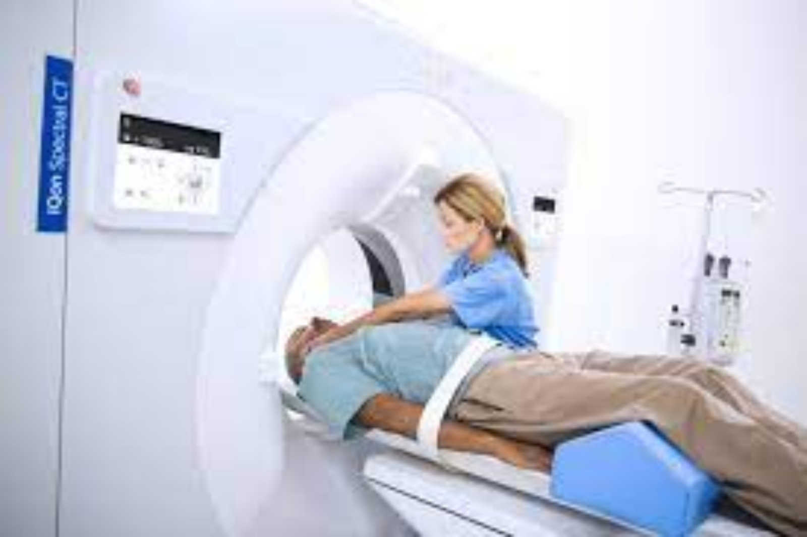

Centro de Turnos: 4555-555
Centro de Turnos: 4555-555
Ofrecemos a nuestros pacientes un servicio diferencial que se destaca por la seguridad y la confiabilidad de los resultados y la atención personalizada en un ambiente de calidez y contención. Para lograrlo, empleamos tecnología de última generación y personal sumamente capacitado y comprometido con el mantenimiento de altos estándares de calidad. Procuramos constantemente la innovación y mejora de procesos, y renovamos de manera continua el equipamiento y la infraestructura de nuestro laboratorio. Asimismo, realizamos la más amplia diversidad de estudios para satisfacer las crecientes necesidades de las distintas especialidades médicas. Los centros de atención tienen una ubicación estratégica en la ciudad de Buenos Aires y las instalaciones y el equipamiento están diseñados para brindar confort y seguridad. Nuestros equipos técnicos se encuentran altamente calificados para atender tanto a pacientes adultos como pediátricos en los distintos procedimientos de toma de muestras. En aval a su excelencia, nuestro Servicio de Laboratorio está acreditado bajo la norma IRAM-ISO-15.189:2014, que garantiza la competencia técnica de los laboratorios de análisis clínicos.
Bajo la atenta mirada de nuestros excelentisimos profesionales. Buscamos brindar comfort y seguridad a todos los pacientes que se acerquen a realizar sus estudios de Imagenes. Nuestros servicios de Ecografia, Tomografia y Mamografia son reconocidos como los mejores del pais y estan acreditados bajo las normas IRAM-ISO.
Actualmente Diagnostico Coder cuenta con un plantilla de cerca de 30 profesionales de excelentisimo nivel. No solo contamos con profesionales de primerisimo nivel internacional sino que pertenecemos a la red de centros de diagnostico mas importante del mundo. Ademas funcionamos como centro de captacion y capacitacion de profesionales medico lo que nos coloco a la vanguardia de la formacion constante, El Departamento de Investigación y Docencia, cuya producción científica, con trabajos y libros publicados a nivel nacional e internacional, fundamenta la excelencia médica asistencial y eleva el nivel de los profesionales. Somos institución afiliada a la Universidad de Buenos Aires (UBA) y contamos entre los profesionales con docentes y profesores de carrera. Los programas académicos anuales incluyen actividades nacionales e internacionales, tales como jornadas, presentaciones en congresos y trabajos que merecieron diversos e importantes premios. La Residencia Universitaria (UBA) en Diagnóstico por Imágenes forma parte de los programas de capacitación de la Institución.